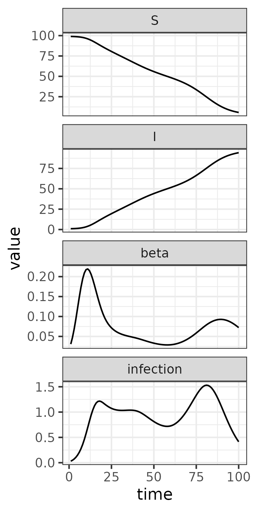

Multiplying Matrices in macpan2 Models
Source:vignettes/matrix_multiplication.Rmd
matrix_multiplication.RmdOverview
Matrix operations are central to macpan2 models. The
engine supports four ways to multiply two matrices together:
- Standard matrix multiplication (
%*%) - Kronecker products (
%x%) - Elementwise multiplication with recycling (
*) - Left sparse matrix multiplication
(
sparse_mat_mult())
This vignette introduces each operation and illustrates typical use cases.
Standard Matrix Multiplication (%*%)
Dense matrix multiplication works in macpan2 exactly as
in base R.
## [,1] [,2]
## [1,] 9 19
## [2,] 12 26
## [3,] 15 33
macpan2::engine_eval(~A %*% B, A = A, B = B)## [,1] [,2]
## [1,] 9 19
## [2,] 12 26
## [3,] 15 33Kronecker Product (%x%)
The Kronecker product builds structured block matrices, exactly as in base R.
## [,1] [,2] [,3] [,4]
## [1,] 0 1 0 2
## [2,] 1 0 2 0
macpan2::engine_eval(~A %x% B, A = A, B = B)## [,1] [,2] [,3] [,4]
## [1,] 0 1 0 2
## [2,] 1 0 2 0Kronecker products are useful for replicating structure across groups or compartments, as described in this article.
Elementwise Multiplication with Recycling (*)
Elementwise multiplication applies entrywise and supports matrix recycling.
Given , the entries of are defined by:
These recycling rules differ from those in base R. See
this
article for a general overview and examples of how
macpan2 handles elementwise binary operators.
Example of Age-Structured Transmission with Elementwise Matrix Multiplication
We illustrate how a structured force of infection can be built inside
a macpan2 model using elementwise matrix
multiplication.
We define the matrices used to construct the force of infection: a 2×1 susceptibility matrix, a 2×2 contact matrix with rows summing to 1, and a 1×2 infectivity matrix.
susceptibility <- matrix(c(0.8, 1.2), ncol = 1,
dimnames = list(sus = c("young", "old"), NULL)
)
contact <- matrix(c(0.6, 0.4,
0.3, 0.7), nrow = 2, byrow = TRUE,
dimnames = list(sus = c("young", "old"),
inf = c("young", "old"))
)
infectivity <- matrix(c(1.0, 0.5), nrow = 1,
dimnames = list(NULL, inf = c("young", "old"))
)
print(susceptibility)##
## sus [,1]
## young 0.8
## old 1.2
print(contact)## inf
## sus young old
## young 0.6 0.4
## old 0.3 0.7
print(infectivity)## inf
## young old
## [1,] 1 0.5We next define the model specification. The before block
uses elementwise matrix multiplication to construct a transmission
matrix B from susceptibility,
contact, and infectivity. This is multiplied
by normalized prevalence to produce the force of infection
lambda.
spec <- mp_tmb_model_spec(
before = list(
N ~ S + I
, B ~ beta * susceptibility * contact * infectivity
, lambda ~ B %*% (I / N)
),
during = list(
mp_per_capita_flow(
from = "S", to = "I", rate = "lambda",
flow_name = "infection"
)
),
default = nlist(
beta = 0.8
, S = c(young = 90, old = 90)
, I = c(young = 10, old = 10)
, N = c(young = 100, old = 100)
, susceptibility, contact, infectivity
, infection = c(young = NA_real_, old = NA_real_)
)
)Note the specification of the infection vector in the
default list so that the names young and
old can be provided in the simulated outputs.
We next run the simulation for 50 time steps and plot the trajectories of susceptibles, infecteds, and new infections, stratified by age group.
library(dplyr)
library(ggplot2)
result <- (spec
|> mp_simulator(
time_steps = 50,
outputs = c("S", "I", "infection")
)
|> mp_trajectory()
|> mutate(
variable = factor(matrix, levels = c("S", "I", "infection")),
age = factor(row, levels = c("young", "old"))
)
)
(result
|> ggplot()
+ aes(time, value)
+ geom_line()
+ facet_grid(variable ~ age, scales = "free")
+ theme_bw()
)Note that elementwise matrix multiplication with row and column
vectors is equivalent to standard matrix multiplication with diagonal
matrices. That is, in macpan2
susceptibility * contact * infectivity behaves like
diag(susceptibility) %*% contact %*% diag(infectivity), but
with fewer zeros.
Multiplying a Sparse Matrix with a Dense Matrix
It is often necessary to perform matrix multiplications where the
left-hand matrix is sparse—meaning most of its entries are zero. Passing
large sparse matrices as dense matrices with zeros into
macpan2 models can lead to unnecessary memory use and
performance slowdowns.
To address this, macpan2 provides the engine function
sparse_mat_mult(), which multiplies a sparse matrix (given
in compressed form) by a dense matrix. Instead of passing the full
sparse matrix, you pass:
-
x— non-zero values -
i— zero-based row indices -
j— zero-based column indices -
y— dense right-hand matrix -
z— pre-allocated output matrix
Extracting Sparse Representation
To simplify the creation of sparse representations,
macpan2 provides the helper function
sparse_matrix_notation(). This function takes a dense
matrix and returns:
A <- matrix(c(5, 0, 0,
0, 0, 3,
0, 2, 0), nrow = 3, byrow = TRUE)
A_sparse <- sparse_matrix_notation(A, zero_based = TRUE)
print(A_sparse)## $row_index
## [1] 0 1 2
##
## $col_index
## [1] 0 2 1
##
## $values
## [1] 5 3 2
##
## $M
## [,1] [,2] [,3]
## [1,] 5 0 0
## [2,] 0 0 3
## [3,] 0 2 0
##
## $Msparse
## [,1] [,2] [,3]
## [1,] 5 0 0
## [2,] 0 0 3
## [3,] 0 2 0
total_entries <- length(A)
non_zero_entries <- length(A_sparse$values)
sparsity <- 100 * (1 - non_zero_entries / total_entries)
cat(sprintf("Matrix sparsity: %.1f%%\n", sparsity))## Matrix sparsity: 66.7%Small Example of Sparse Matrix Multiplication
We illustrate sparse matrix multiplication by continuing the example
where matrix A is represented by the sparse object
A_sparse, and multiplying A by a dense matrix
y.
y <- matrix(c(1, 4,
2, 5,
3, 6), nrow = 3, byrow = TRUE)
# Pre-allocate output matrix (3×2)
z <- matrix(0, nrow = 3, ncol = 2)
# Model specification with sparse_mat_mult
spec <- mp_tmb_model_spec(
before = z ~ sparse_mat_mult(x, i, j, y, z),
default = nlist(x = A_sparse$values, y, z),
integers = list(i = A_sparse$row_index, j = A_sparse$col_index)
)
# Run simulation for zero time steps to
# execute 'before' block only
result <- (spec
|> mp_simulator(time_steps = 0, outputs = "z")
|> mp_final_list()
)
# Result from macpan2
print(result$z)## 0 1
## 0 5 20
## 1 9 18
## 2 4 10
# Direct multiplication for validation
A %*% y## [,1] [,2]
## [1,] 5 20
## [2,] 9 18
## [3,] 4 10-
sparse_mat_mult()multiplies a sparse matrix (given as values and indices) by a dense matrix without constructing the full sparse matrix. - The helper
sparse_matrix_notation()extracts the required sparse representation from any matrix, applying zero-based indexing and a numerical tolerance for treating near-zero elements as exactly zero. - The function writes the result into
z, which must be allocated beforehand.
Example of Sparse Matrix Multiplication to Model Time-Varying Transmission Rate
We implement an SI model where the transmission rate
varies over time, modelled as a spline basis expansion:
We use
sparse_matrix_notation() to encode the spline basis
sparsely and compute
using sparse_mat_mult() in the before block.
In this case, the spline basis contains no exact zeros, but many
near-zero values that contribute little to the result. The tolerance
ensures these negligible entries are dropped, improving sparsity without
meaningfully affecting the result. For basis matrices like these,
choosing a reasonable tolerance (e.g., 1e-4) helps strike a
balance between computational efficiency and model fidelity.
We compute from a sparse spline basis.
# Time points for simulation (100 steps)
n_steps <- 100
time_points <- seq(0, 1, length.out = n_steps)
# Create a cubic B-spline basis with 8 degrees of freedom
B_dense <- bs(time_points, df = 8, degree = 3, intercept = TRUE)
# Convert basis to sparse form with small tolerance
B_sparse <- sparse_matrix_notation(B_dense
, zero_based = TRUE
, tol = 1e-4
)
# Print basis sparsity
total_entries <- length(B_dense)
non_zero_entries <- length(B_sparse$values)
sparsity <- 100 * (1 - non_zero_entries / total_entries)
cat(sprintf("Spline basis matrix sparsity (tol = 1e-4): %.1f%%\n", sparsity))## Spline basis matrix sparsity (tol = 1e-4): 52.5%
# Example spline coefficients for log(beta)
set.seed(12)
theta <- rnorm(8, -2, 1)
# Pre-allocate beta_log[t] for 100 time steps
beta_log <- matrix(0, nrow = n_steps, ncol = 1)
# Define SI model with time-varying beta
spec <- mp_tmb_model_spec(
before = beta_log ~ sparse_mat_mult(x, i, j, theta, beta_log),
during = list(
beta ~ exp(beta_log[time_step(1)]),
mp_per_capita_flow(
from = "S",
to = "I",
rate = "beta * I / N",
flow_name = "infection"
)
),
default = nlist(N = 100, S = 99, I = 1, x = B_sparse$values, theta, beta_log),
integers = nlist(i = B_sparse$row_index, j = B_sparse$col_index)
)
# Simulate for 100 time steps
result <- (spec
|> mp_simulator(
time_steps = n_steps
, outputs = c("S", "I", "beta", "infection")
)
|> mp_trajectory()
|> mutate(variable = factor(
matrix
, levels = c("S", "I", "beta", "infection")
))
)
# Plot the results
ggplot(result, aes(time, value)) +
geom_line() +
facet_wrap(~variable, scales = "free_y", ncol = 1) +
theme_bw()
- Transmission rate
is computed dynamically using
sparse_mat_mult(). - The spline basis is passed in sparse form, allowing efficient calculation of at each time step.
- The SI model uses
mp_per_capita_flow()for infection, with time-varying transmission. - For this example, the spline basis (with tolerance ) has approximately 52.5% sparsity.
- Larger models with higher sparsity will benefit more from this approach.
Summary of Matrix Operations
| Operation | Description |
|---|---|
%*% |
Dense matrix multiplication |
%x% |
Kronecker product |
* |
Elementwise multiplication with recycling |
sparse_mat_mult() |
Sparse × Dense multiplication |
When to Use Each
- Dense × Dense (
%*%) : Use for small/moderate dense matrices. - Kronecker (
%x%) : Use for structured expansions (example). - Elementwise (
*) : Use for scaling rates in structured models (example). - Sparse × Dense (
sparse_mat_mult()) : Use for large, sparse left-hand matrices (example).